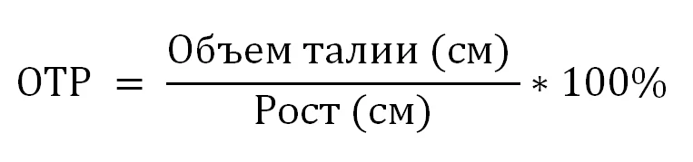

Отношение объема талии к росту (ОТР) - это показатель, который помогает оценить распределение жира в организме с учетом роста человека. Этот показатель играет важную роль в определении риска для различных заболеваний и состояний здоровья.
Отношение объема талии к росту является одним из показателей, который помогает оценить нежелательное распределение жира в организме. На первый взгляд это может показаться просто как числовой показатель, но на самом деле это может дать представление о здоровье и риске определенных заболеваний.
Исследования показывают, что накопление жира в области талии, особенно вокруг внутренних органов, может быть связано с повышенным риском различных хронических заболеваний. Это объясняется тем, что висцеральный жир, который накапливается в брюшной полости вокруг внутренних органов, может вырабатывать биологически активные вещества, которые воздействуют на общее здоровье.
Отношение объема талии к росту может быть индикатором следующих заболеваний и рисков:
Отношение объема талии к росту рассчитывается по следующей формуле:

Интерпретация значений:
| Для мужчин: | |
|---|---|
| менее 42,9% | Недостаток веса |
| 43-52,9% | Нормальный вес |
| 53-57,9% | Избыточная масса тела |
| 58-62,9% | Ожирение |
| 63% и более | Сильное ожирение |
| Для женщин: | |
|---|---|
| менее 41,9% | Недостаток веса |
| 42-48,9% | Нормальный вес |
| 49-53,9% | Избыточная масса тела |
| 54-57,9% | Ожирение |
| 58% и более | Сильное ожирение |
Данная формула представлена в разделе Расчеты → Соотношение Талия-Рост приложения.
Окружность талии нужно измерять в самой узкой её части, как правило, чуть выше пупка.
Кроме того, в случае, если талия выпуклая, а не вогнутая, как например, это происходит во время беременности, ожирении и при различных особенностях строения тела, талия может быть измерена на горизонтальном уровне на расстоянии 2,5 см выше пупка.
Интересно отметить, что отношение талии к бедрам (ОТБ) и отношение объема талии к росту отлично взаимодействуют и дополняют друг друга. Например, человек с нормальным ОТР, но высоким ОТБ, может все равно иметь некоторый риск из-за висцерального жира в области живота.
Комбинированный анализ обоих показателей может дать более глубокое понимание о распределении жира в организме и связанном с этим риске. Важно помнить, что ни один показатель не является идеальным предсказателем здоровья, и решения о питании, физической активности и заботе о здоровье следует принимать комплексно.
Отношение объема талии к росту (ОТР) предоставляет информацию о распределении жира с учетом роста человека и его связи с риском различных заболеваний.
Как и с любыми показателями, важно рассматривать ОТР в контексте общего образа жизни и состояния здоровья. При поддержании активного образа жизни и рациональном питании, можно уменьшить риск связанных с нежелательным распределением жира заболеваний.